ME/MQE outside crisis
Three inflation targets, fixed-factor ablation and original DFM-based FarmPredict. 2020 excluded throughout. Training unchanged. Below one favors the named numerator.
Results | MSE comparisons
Headline — ME — outside_energy_crisis
PDF
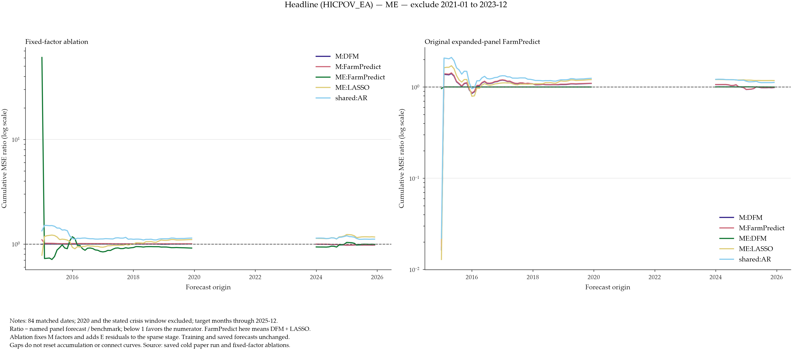
Headline — MQE — outside_energy_crisis
PDF
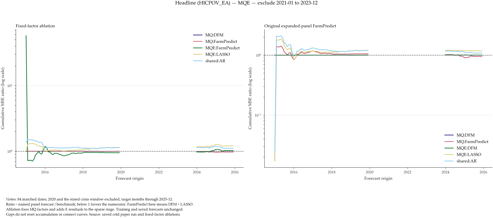
Headline — ME — outside_war_phase
PDF
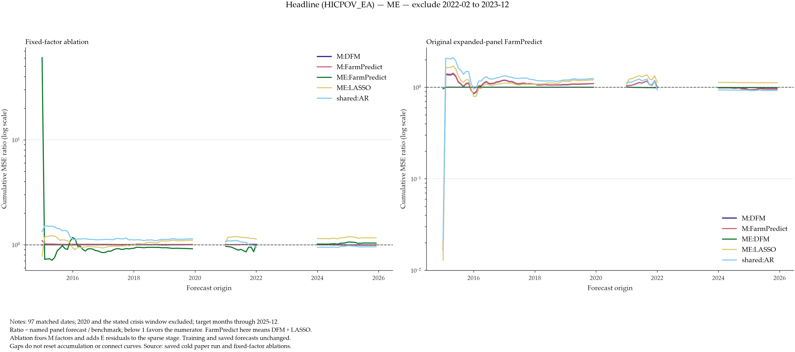
Headline — MQE — outside_war_phase
PDF
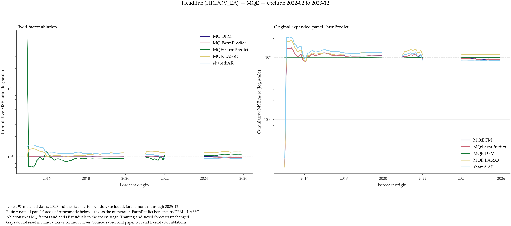
Energy — ME — outside_energy_crisis
PDF
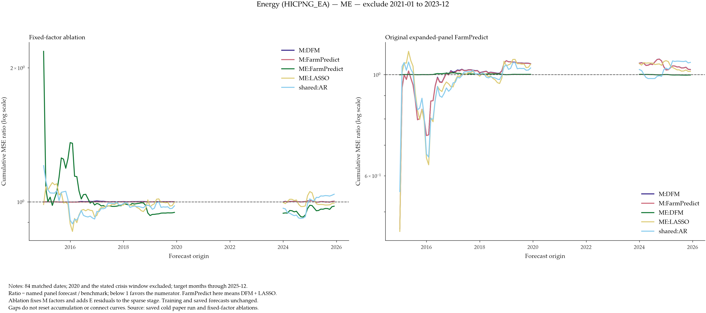
Energy — MQE — outside_energy_crisis
PDF
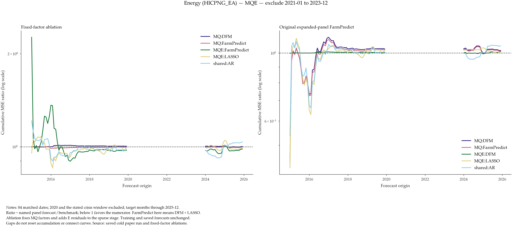
Energy — ME — outside_war_phase
PDF
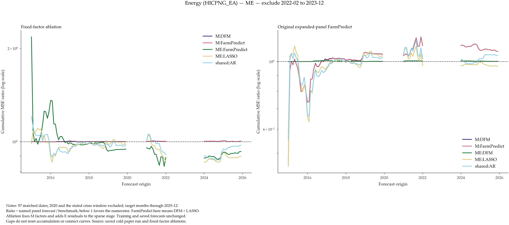
Energy — MQE — outside_war_phase
PDF
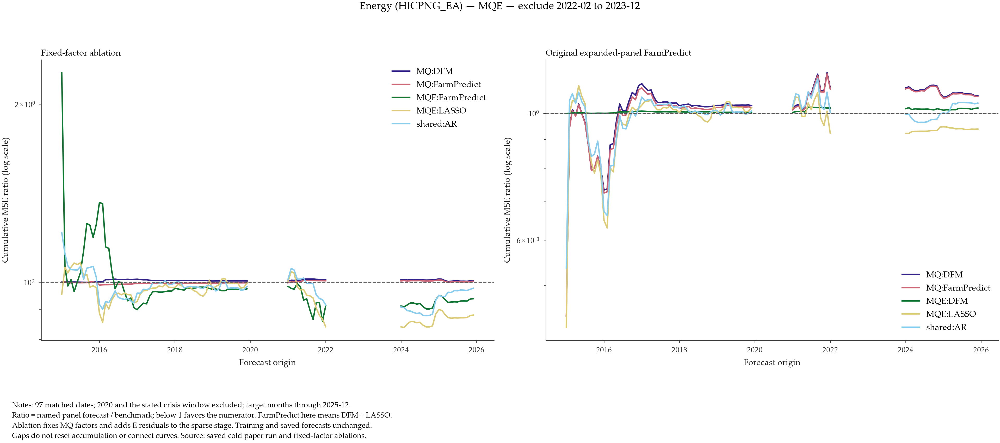
Core — ME — outside_energy_crisis
PDF
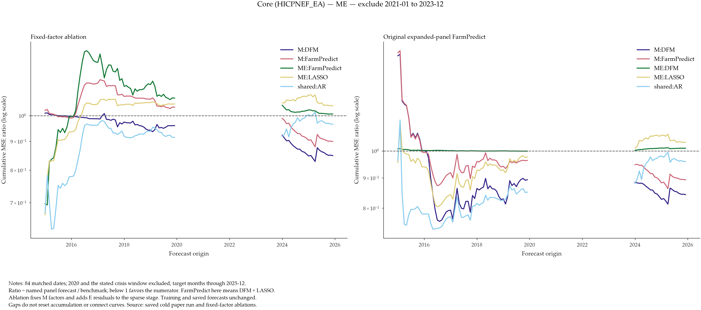
Core — MQE — outside_energy_crisis
PDF
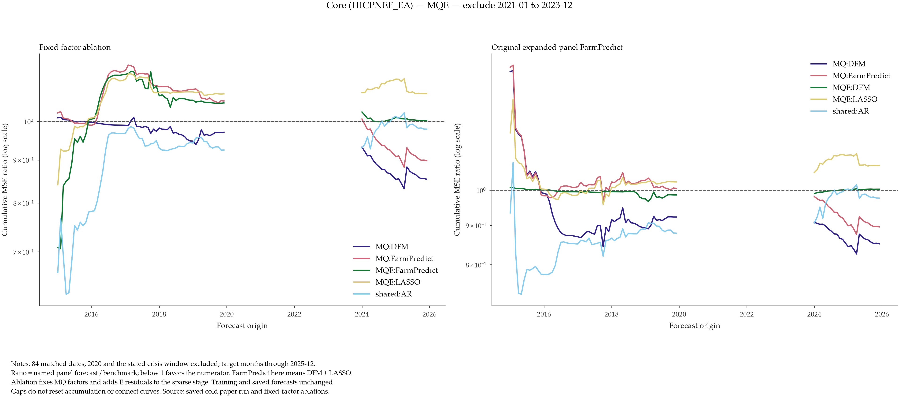
Core — ME — outside_war_phase
PDF
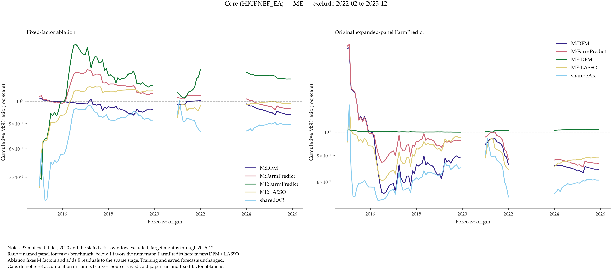
Core — MQE — outside_war_phase
PDF
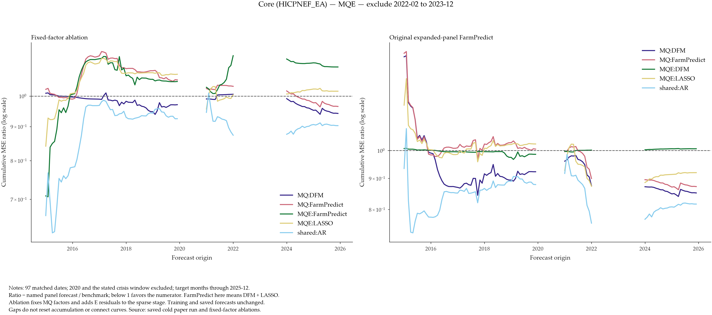